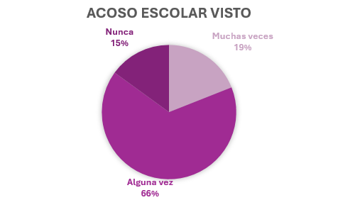
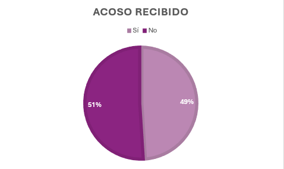
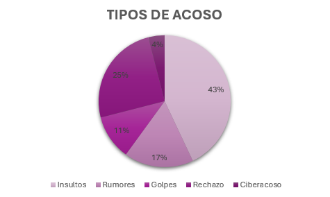
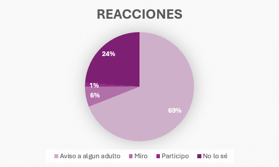

A veces parece que, para que los adultos nos tomen en serio, tenemos que llegar a casa con un golpe físico. Pero la realidad es que el acoso tiene muchas caras y todas son igual de difíciles de aguantar.
¿Qué es el acoso escolar?
El bullying no es una pelea de un día; es ese comportamiento injusto que se repite una y otra vez. Es cuando alguien (o un grupo) decide que tiene el poder de controlarte, asustarte o humillarte. No es algo que pase "porque sí", es una forma de maltrato que busca hacerte sentir pequeño.
Es más fácil darse cuenta de que hay acoso cuando aparecen dos cosas muy claras. La primera es el abuso de poder. Esto pasa cuando una o varias personas usan la fuerza, las amenazas o la intimidación para hacer sentir mal, humillar o hacer daño emocional a alguien.
La segunda es la repetición. No es algo que ocurre una sola vez, sino que se repite una y otra vez con la intención de afectar física o emocionalmente a la persona. Además, va en contra de los valores y las normas que existen en la escuela. Aunque el motivo más común para hacer bullying suele ser la apariencia física, también influyen otras cosas, como las calificaciones o incluso la actitud agresiva de quienes molestan.
Las tres formas en las que el acoso se cuela en tu vida
Puede haber diferentes tipos de acoso escolar, pero los tres fundamentales que me gustaría recalcar son el acoso verbal, el social y el físico.
Acoso verbal. Son los insultos, las burlas "en broma" que en realidad duelen, los motes feos o los comentarios fuera de lugar sobre tu cuerpo o tu forma de ser. Las palabras pueden ser como flechas que se quedan clavadas mucho tiempo.
Acoso social. Este es de los más crueles porque es silencioso. Es cuando te excluyen a propósito, cuando inventan rumores falsos sobre ti para que nadie se junte contigo o cuando te avergüenzan en público. Es ese sentimiento de "no existes para nosotros".
Acoso físico. Aquí entran los empujones, los golpes, que te rompan tus cosas o que te las escondan. Es cualquier acción que busque dañarte físicamente o quitarte lo que es tuyo.
¿Cómo se que estoy sufriendo acoso?
A veces estamos tan acostumbrados a pasarlo mal que nos cuesta darnos cuenta de que esto no es normal. Si sientes que ya no tienes ganas de ir a clase, si has dejado de disfrutar lo que antes te encantaba, si te duele la cabeza o la barriga solo de pensar en el instituto, o si tus notas han bajado de golpe... escúchate. Tu cuerpo te está avisando de que algo no va bien.
La realidad en números
Si sientes que esto solo te pasa a ti, mira estas cifras:
- Hoy en día, 1 de cada 10 estudiantes vive o conoce casos de acoso de cerca.
- El acoso físico ha subido muchísimo (un 30%), pero el ciberacoso es el nuevo frente de batalla.
- WhatsApp, Instagram y TikTok son los lugares donde más se ataca, y ahora incluso se usa la Inteligencia Artificial para crear videos falsos o robar identidades.
Es normal sentir que los centros educativos a veces no hacen lo suficiente (6 de cada 10 alumnos piensan igual), pero eso no significa que debas rendirte.
Tu voz es importante
El acoso se alimenta del miedo y del silencio. Si sientes que estás en esta situación, o ves que le pasa a alguien de tu clase, el paso más valiente no es "aguantar", sino pedir ayuda.
Estadísticas
Según un estudio que he realizado en el Colegio El Valle de Alicante, más de un 60% de estudiantes afirman haber presenciado alguna vez algún tipo de acoso escolar en su entorno, y casi un 20% afirma que lo ve en muchas ocasiones.
Muchas veces, estos alumnos no solo lo ven en los demás, sino que casi la mitad de ellos lo sufren o lo han sufrido alguna vez o en repetidas ocasiones.
De ese porcentaje de adolescentes que han recibido acoso, un 43% afirma haber sido insultado, el 17% confirma que se han filtrado rumores sobre él/ella, el 11% afirma haber recibido golpes, el 25% rechazo hacia el grupo, y un 4% ciberacoso.
Un problema bastante grande y del cual no hay que hacer generalizaciones es en la reacción de los alumnos al ver este acoso, ya que, aunque el 69% avisaría a algún adulto, el 24% no sabría que hacer, pero lo que es peor es que el 6% se quedaría mirando e incluso el 1% participaría.
Recuerda, no estas solo/a.